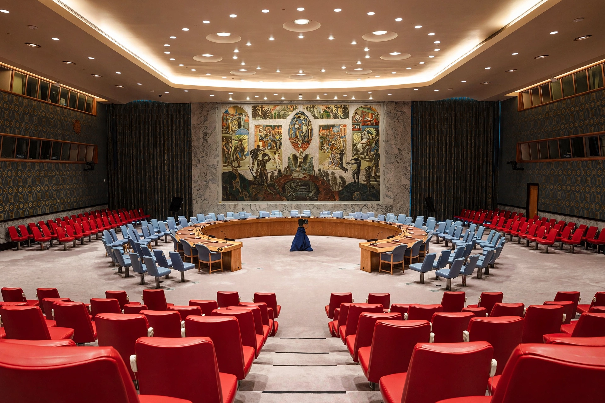

Sanctions, in law and in international relations, are penalties or coercive measures imposed to enforce compliance with laws, norms, or policies. The term covers several distinct domains: economic sanctions imposed by states or international bodies on other states, groups, or individuals; legal sanctions within a justice system, ranging from fines to imprisonment; and informal social sanctions that enforce norms within a community.
| Sanctions | |
|---|---|
 The UN Security Council can impose binding sanctions under Chapter VII of the UN Charter. | |
| Types | Economic, trade, financial, military, diplomatic, legal, social |
| Imposed by | States, the UN Security Council, the European Union, courts |
| Purposes | Coercion, deterrence, punishment, signalling |
Economic sanctions are commercial and financial penalties applied by one or more countries against a targeted self-governing state, group, or individual. Measures include embargoes on trade or arms, asset freezes, travel bans, restrictions on banking and investment, and exclusion from financial messaging systems such as SWIFT. Sanctions may be comprehensive, restricting an entire economy (as with the long-running United States embargo against Cuba), or targeted or "smart", aimed at specific officials, companies, and sectors to reduce humanitarian harm. The UN Security Council can impose sanctions binding on all member states under Chapter VII of the UN Charter, as it did against Iraq in the 1990s and against North Korea's nuclear programme. Unilateral and coalition sanctions have been applied extensively against Iran and, after 2014 and especially following the 2022 invasion of Ukraine, against Russia.
Scholars debate how often sanctions achieve their stated aims; classic studies credit them with at least partial success in roughly a third of cases, usually when goals are modest and the sender and target are economically interdependent. Critics argue that comprehensive sanctions often harm civilian populations while entrenching regimes, spur sanctions evasion and black markets, and can accelerate the development of alternative financial systems. Supporters reply that sanctions provide a tool between diplomacy and war, signalling resolve and raising the cost of aggression or nuclear proliferation.
In law, sanctions are the penalties attached to violations — fines, damages, licence revocations, imprisonment — and in civil procedure may be imposed on parties or lawyers for misconduct such as frivolous filings. In sociology, following Émile Durkheim and later theorists, sanctions are the rewards and punishments by which societies enforce social norms, from approval and praise to ostracism and formal punishment.